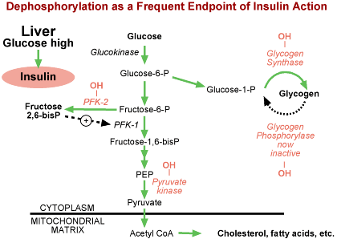

|
The Biology Project Home > Biochemistry > Regulation of Carbohydrate Metabolism > Problem Sets Carbohydrate Metabolism Regulation Problem SetQuestion 2: Enzymes Dephosphorylated by Insulin ActionTutorial to help answer the questionOf the enzymes of carbohydrate metabolism listed below, which are (de)phosphorylated in liver in response to insulin signaling?
TutorialFour of the six enzymes named in the above figure are dephosphorylated in response to insulin. These enzymes are denoted by a red -OH, signifying that the phosphate group has been removed from the serine or threonine residue in the enzyme, leaving a free hydroxyl. Recall that enzyme dephosphorylation is often the way in which enzymes are ultimately regulated by insulin (don't worry about the exact mechanism for now - there are too many steps between insulin binding and activation of the protein phosphatase). In three of the four cases, the enzyme is activated by dephosphorylation. The
exception is found in the glycogen synthase/phosphorylase pair, which obviously
cannot both be activated at the same time. However, you don't necessarily have
to memorize which one is inhibited by insulin - this can be reasoned through
by considering which way the reaction should go in times of high blood glucose.
You guessed it, toward glucose storage (i.e., glycogen synthesis).
Problem 2 | Answer | Problem
3 The Biology Project Home > Biochemistry > Regulation of Carbohydrate Metabolism > Problem Sets The University of Arizona March 16, 2001 Revised: August, 2004 Contact the Development Team http://www.biology.arizona.edu
|